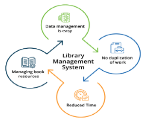

Систем за управување со библиотека | |
|
Системот за управување со библиотека е софтвер кој е дизајниран да управува со сите функции на библиотеката. Тоа му помага на библиотекарот да ја одржува базата на податоци за нови книги и книгите што ги позајмуваат членовите заедно со нивните датуми на доспевање. Овој систем целосно ги автоматизира сите активности на вашата библиотека. Најдобар начин за одржување, организирање и систематско ракување со безброј книги е да се имплементира системски софтвер за управување со библиотека. Систем за управување со библиотека се користи за одржување на библиотечни записи. Ја следи евиденцијата за бројот на книги во библиотеката, колку книги се издадени, или колку книги се вратени или обновени или задоцнети парични казни итн. Можете да најдете книги веднаш, да издавате/реиздавате книги брзо и да управувате со сите податоци ефикасно и уредно користејќи го овој систем. Целта на системот за управување со библиотеката е да обезбеди инстант и точни податоци за кој било тип на книга, а со тоа да заштеди многу време и напор. |
 |